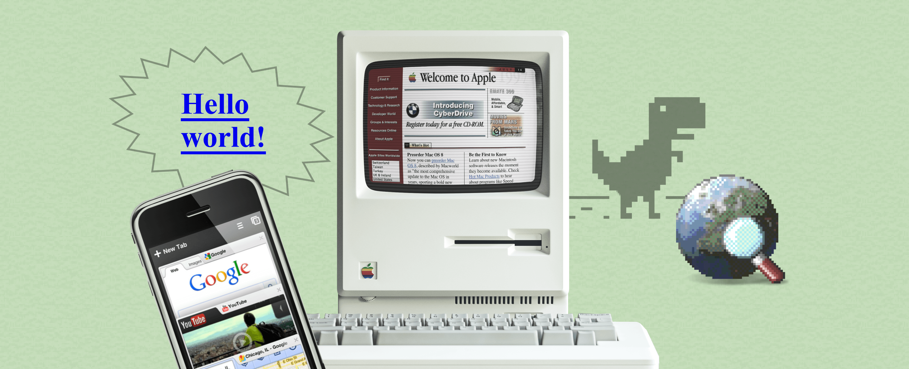

- Calculatorul personal – În anii '80, calculatorul devine un obiect uzual. Microprocesoarele Intel (8086, 80386, Pentium) cresc rapid în putere. Sistemele de operare MS-DOS și apoi Windows fac calculatorul accesibil oricui, nu doar specialiștilor.
- World Wide Web (1989–1991) – Tim Berners-Lee, la CERN, a inventat WWW: paginile web, browserul și protocolul HTTP. Internetul, care exista deja, a devenit accesibil publicului larg și a transformat complet modul de informare.
- E-mail-ul și mesageria – E-mailul a fost folosit din anii '70 în mediul universitar, dar s-a popularizat în anii '90 prin servicii precum Hotmail și Yahoo Mail. Programe ca ICQ, MSN Messenger și mai târziu Skype au schimbat modul în care comunicăm.
- Telefonia mobilă – Primul telefon mobil comercial (Motorola DynaTAC) a apărut în 1983. În anii '90 telefoanele mobile au devenit din ce în ce mai mici și mai accesibile (Nokia 3310, 2000). SMS-ul a devenit principala metodă de comunicare scrisă pentru tineri.
- Motoarele de căutare – Yahoo!, AltaVista și apoi Google (1998) au permis găsirea rapidă a informațiilor pe web. Algoritmul PageRank al lui Google a schimbat complet modul în care folosim internetul.
- Rețelele sociale – Friendster (2002), MySpace (2003), Facebook (2004), YouTube (2005), Twitter (2006). Au transformat internetul dintr-un spațiu de citit într-un spațiu de creat și împărtășit conținut.
- Smartphone-ul (2007) – Lansarea iPhone-ului de către Apple a marcat începutul unei noi ere. Telefonul a devenit calculator, cameră foto, GPS, casetofon și consolă de jocuri – toate într-un singur dispozitiv.
- Wi-Fi și internet de mare viteză – Conexiunile prin cablu telefonic (dial-up) au fost înlocuite de DSL, fibră optică și Wi-Fi, permițând streaming, jocuri online și videoconferințe în timp real.
